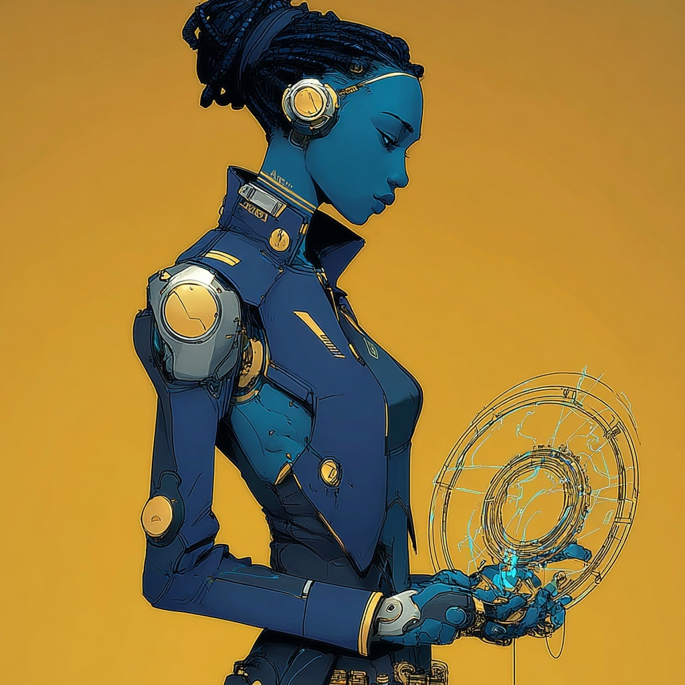

Spec ops. She handles direct action. She doesn't carry a visible weapon because she is the weapon.
Per Zenith.md, Operator Azimuth is the unit's psionic specialist and direct-action operative. She handles direct action on the perimeter alongside Keshet — "Keshet calls the play, Azimuth executes it." As a Talent of the Telekinesis subclass, she can take strain to push past the normal limits of her Heroic Resource, effectively overclocking her psionic output when the situation demands performance beyond standard parameters. Per Zenith.md: "She doesn't carry a visible weapon because she is the weapon."
Culture: Mercenary Band — Nomadic, Bureaucratic, Martial. Per Zenith.md: "Before the office, she operated among soldiers for hire — chaotic, transactional, violent work that gave her a foundational comfort with uncertainty that most memonek lack."
Career: Disciple. From the career description: "You worked in a church, temple, or other religious institution as part of the clergy." The career grants her Religion, Timescape, and Psionics skills, 240 Project Points, and the Thingspeaker supernatural perk.
Two peaks at +2 (Reason, Presence), Intuition at +1, and Might and Agility at flat zero. Every mechanical action she takes is mediated through Reason (psionic force output) or Presence (higher-order control).
| Stat | Value |
|---|---|
| Speed | 7 — Lightning Nimbleness ancestry trait sets Speed to 7 (verbatim) |
| Kit | None — Talents do not have kits unless they take Battle Augmentation; Azimuth took Force Augmentation |
| Strain Threshold | −3 — formula: −(1 + Reason); 1 damage per negative point at end of turn |
| Project Points (max) | 240 — Disciple career bonus |
| Renown | 0 |
| Wealth | 1 |
The exact gain triggers, from the source:
Azimuth selected two ancestry traits: Keeper of Order and Lightning Nimbleness.
| Trait | Description (verbatim) |
|---|---|
| Keeper of Order | Your connection to Axiom, the plane of Uttermost Law, allows you to manage chaos around you. |
| Lightning Nimbleness | You can push your body to move at incredible speeds. Your Speed is 7. |
Per Zenith.md: "Two instances of Keeper of Order (Keshet and Azimuth) allow the team to normalize two rolls per round, removing banes or stripping edges." Azimuth and Keshet selected the same two traits.
Listed below are the abilities Azimuth explicitly selected, plus the core auto-granted abilities of the Talent class and Telekinesis subclass at level 1.
From the class feature description: "Through psionic meditation, you create pathways in your mind that enhance your statistics. Choose one of the following augmentations. You can change your augmentation along with your ward by undergoing a psionic meditation as a respite activity."
From the source: +1 damage on abilities with the Psionic keyword. Azimuth did not select Battle Augmentation (armor/weapon proficiency), Density Augmentation (Stamina/Stability scaling), Distance Augmentation (range on Psionic Ranged), or Speed Augmentation (Speed/Disengage).
"You surround yourself with an invisible ward of telekinetic energy." Triggered action. Trigger: an adjacent creature deals damage to you. Effect: you can push your attacker up to Reason squares.
Per the ENCOUNTERS file, Mindspeech is the language of the Synliroi (Voiceless Talkers), a Tier 1 existential threat for the party. Both Nomos and Azimuth know it. Nomos acquired it via his Ivory Tower complication (dead language slot); Azimuth acquired it via the Talent class language slot. Whether this overlap is significant is for the Director to decide.
From the complication description (verbatim): "You've always had a lucky streak. When you leave things in the hands of fate, you succeed more than you fail. But luck is fickle — when you don't trust it, it deserts you."
| Aspect | Mechanic (verbatim) |
|---|---|
| Lucky Benefit | When you spend a hero token to succeed on a saving throw or reroll a test, roll a d10. On a 6 or higher, you gain the benefit but don't spend the hero token. |
| Lucky Drawback | Whenever you obtain a tier 1 result on a test and don't spend a hero token to reroll, you take a bane on the next test you make. |
Per Zenith.md: "She's the team member most at ease when the plan collapses, because her entire life has been structures collapsing and things working out anyway. Her relationship with worldsickness is absorption — she takes the hit so the structure holds."
Per Zenith.md (tactical profile): "Azimuth breaks this pattern — as a Talent, she can overclock into strain, pushing past her normal psionic limits when the mission requires output beyond standard parameters. She is the team's throttle."
From the inciting incident (verbatim): "While serving at a religious institution, you almost died in an accident. When you woke, you had lost all memory of ever having worked for the church or temple. Though the clergy encouraged you to stay, you left to forge a new path. Your sense of altruism — whether instilled in you by your past work or a part of who you naturally are — guides you in your life."
The source establishes: an accident at a religious institution, near-death, total memory loss of her time there, the clergy's wish that she stay, her decision to leave. Per Zenith.md narrative profile: "Mercenary life, then religious service at an institution, then a near-death experience that surgically excised her memory of ever having worked at the church. She didn't lose her identity — she lost one specific chapter, and nobody explained why." Specifics — the institution's name, the nature of the accident, the relationship between her lost time and the present day — are for the Director to develop.
The Thingspeaker perk reads emotional resonance from objects, returning the dominant emotion plus a vision answering one of: the person's name, why the emotion lingers, or how long since they held it. If the Director introduces objects from her time at the institution, Thingspeaker is the mechanical path to recovery.
Per Zenith.md: "She handles direct action on the perimeter alongside Keshet — Keshet calls the play, Azimuth executes it." She is the unit's "throttle" — the one whose Talent-class overclock allows output beyond standard parameters when the mission requires it. Her resource economy (Clarity with strain) is the only one in Zenith that can deliberately damage the operator using it.
From Zenith.md: "The excised memory, the institution that took something from her, and a lucky streak that might be something else entirely."
The three threads correspond to specific features. The excised memory is the Near-Death Experience inciting incident. The institution is the Disciple career background plus the Religion/Timescape/Psionics skill set. The lucky streak is the Lucky complication. Whether they are causally connected is an open question for the campaign.